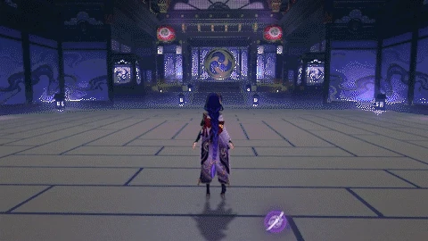

Abilities
Raiden's elemental skill, Transcendence Baleful Omen, deals a small amount of damage and creates the Eye of Stormy Judgement.


The Secret Art Musou Shinsetsu is Raiden's ultimate ability. After a single big strike, Raiden's normal attacks and charged attacks are empowered.